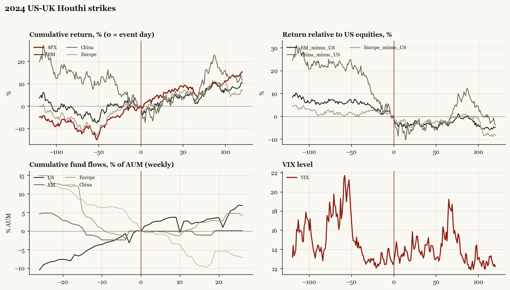

2024 US-UK Houthi strikes
Biden administration. Outbreak/event 2024-01-12, buildup from 2023-12-18. Telegraphed; type: campaign.

What moved
- Equities ran +9.0% over the 60 trading days into the event.
- The S&P 500 moved +7.6% over the following 60 trading days and +15.3% over 120.
- Cumulative net flows into US equity funds: +1.9% of assets in the 13 weeks after (vs +4.8% in the 13 weeks before).
- Cumulative net flows into emerging-market funds: -0.0% of assets in the 13 weeks after (vs +1.1% in the 13 weeks before).
- Cumulative net flows into Europe funds: +0.5% of assets in the 13 weeks after (vs -3.7% in the 13 weeks before).
- Cumulative net flows into China funds: -6.9% of assets in the 13 weeks after (vs -7.1% in the 13 weeks before).
- Implied volatility moved +0.8 VIX points across the event (from 12.4).
- Operation Prosperity Guardian 12-18 preceded strikes
Detail
| series |
runup pre-60d |
+20d |
+60d |
+120d |
| SPX |
+9.0% |
+4.9% |
+7.6% |
+15.3% |
| US |
+8.9% |
+5.0% |
+7.6% |
+15.3% |
| EM |
+3.3% |
+1.6% |
+4.9% |
+10.5% |
| China |
-12.7% |
-0.7% |
+5.5% |
+11.5% |
| Taiwan |
-2.6% |
+6.1% |
+11.1% |
+24.3% |
| Europe |
+8.4% |
+0.4% |
+5.3% |
+7.0% |
| Japan |
+10.4% |
+0.8% |
+4.3% |
+4.7% |
| Bonds |
+8.8% |
-2.0% |
-4.9% |
-2.5% |
| Gold |
+6.3% |
-1.4% |
+12.8% |
+14.1% |